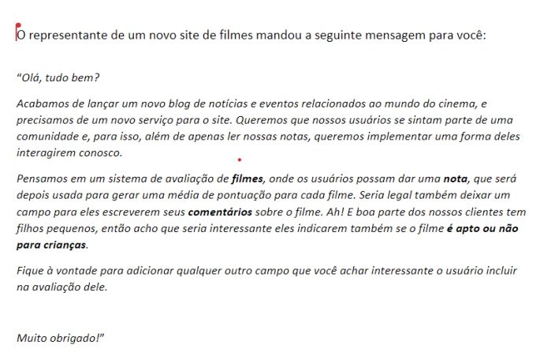

Exercícios Aula Ao Vivo 01.03.2023
Nome: Jonathan P P Maia
Atividade 01 - Etapas de um algoritmo quando vamos escrever um
software:
Atividade 02 - Quais tipos de dados possiveis:
Atividade 03 - Diferença entre comandos de entrada e comandos de saída:
Atividade 04 - Maquina de venda automática:
Queremos programar uma máquina de venda automática. Os usuários podem pagar diretamente nela(sem precisar ir no caixa) e escolher a comida ou bebida de preferência.
Quais seriam as etapas do algoritmo necessário para faê-las funcionar?
Etapas do Algotimo
Entrada de dados:
forma de pagamento
código do produto
Processamento:
Verificar Produtos Disponíveis
Esolher o Produto
verificar o valor do produto
fazer o pagamento
Saída de Dados:
Produto é entregue
-------------------------------------------
Algoritmo: Maquina de Venda
var
produto : intinicio
escreva("Escolha o produto")
leia (produto)
escreva("Escolha forma de pagamento")
leia(formaPagamento)
escreva("Pagamento Aceito")
escreva("retire o produto")
FimAlgoritmo
Atividade 05 - App Calculo gastos Mensal:
Carmen quer poupar dinheiro para sua viagem de fim de ano, mas ela compra com dinheiro, cartão de débito e cartão de crédito. ELa precisa de um aplicativo que calcule os gastos totais dela no mês
Entrada de dados:
Gastos em dinheiro
Gastos com Cartão de Crédito
Gastos com Cartão de Débito
Processamento:
Verificar total de despesas pagas em dinheiro
Verificar o total de despesas pagas com cartão de crédito
verificar o total de despesas pagas com cartão de débito
Somar todas as depesas/p>
Saída de Dados:
Relatório de gastos mensais
-------------------------------------------
Algoritmo: Calculo de de Gasto Mensal
var
vrDinheiro: realinicio
escreva("Defina o mês para o calculo?")
leia (mesCalculo)
escreva("Quanto você gastou nesse mês em dinheiro?")
leia (vrDinheiro)
escreva(Quanto você gastou nesse mês com seu cartão de Debito?)
leia(vrDebito)
escreva("Quanto você gastou nesse mês com seu cartão de Crédito?")
leia("vrCredito")
soma <- vrDinheiro + vrDebito + vrCredito
escreva("No ", mesCalculo, "você gastou ", soma)
FimAlgoritmo
-------------------------------------------
Algoritmo: Avaliação de Filmes
var
titulo: caractereinicio
escreva("--------------Faça a Avaliação do Filme--------------")
leia (mesCalculo)
escreva("Qual o titulo do FILME:")
leia (titulo)
escreva("Digite a pontuação:)
leia(nota)
escreva("Digite a classificação:")
leia(nota)
escreva("Digite o Gênero do Filme:")
leia(genero)
escreva("Avaliação Feita com Sucesso")
escreva("nome do Filme: ", titulo)
escreva("Nota do Filme: ", nota)
escreva("Classificacao do Filme: ", classificacao)
escreva("Gênero do Filme: ", classificacao)
escreva("Seu comentário: ", comentario)
FimAlgoritmo